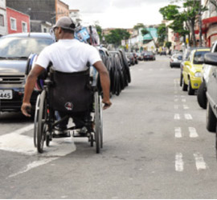

Apenas 5% do ABC conta com rampas para deficientes
DIFICULDADES PARA CADEIRANTES FORAM IDENTIFICADAS EM TODO O PAÍS, COM APENAS 4,7% DE ACESSOS ADEQUADOS.
As pessoas que dependem de cadeira de rodas para se locomover ou possuem algum tipo de limitação nos movimentos não têm por onde circular em 95% das proximidades de domicílios em situação urbana do ABC.
A pesquisa Características Urbanísticas nos Entornos dos Domicílios, realizada pelo Instituto Brasileiro de Geografia e Estatísticas (IBGE) e parte integrante do Censo 2010, pesquisou 721.977 residências permanentes urbanas e apenas 39.966 ou 5,5% contam com rampas para cadeirantes no seu entorno.
Entre as cidades, levando em consideração o número de residências pesquisadas, a que conta com melhor infraestrutura para pessoas que utilizam cadeiras de rodas ou possuem alguma dificuldade de locomoção é São Caetano, onde a pesquisa identificou 31% dos domicílios com acessos adequados no entorno. A situação oposta ocorre em Santo André, com apenas 0,48% das regiões urbanas com rampas nas imediações.
Essa falta de estrutura atrapalhou muitos compromissos do assessor político Anderson Damasceno. Há 13 anos, após um acidente de moto, Damasceno passou a depender de cadeiras de rodas para se locomover. “Já desisti de comparecer a eventos por falta de acesso. Em alguns locais até existem rampas, mas foram construídas sem seguir normas, tornando impossível o trânsito de cadeiras”, explicou.
Apesar disso, o cadeirante afirma que a situação mudou para melhor na última década. “Existe um decreto de lei de 2004 que define claramente o que é acessibilidade. O problema é que persistem projetos mal executados, falta de manutenção e fiscalização por parte do poder público”, completou.
Há quatro anos, uma doença obriga a estudante Maria Paula Vieira, também moradora de Santo André, a utilizar cadeira de rodas. “Me locomovo de carro, mas quando tenho a necessidade de andar pelas ruas vejo a dificuldade. As calçadas são mal asfaltadas, mal projetadas e preparadas. Muitos postes e árvores atrapalham também”, afirmou. Maria também cita rampas mal feitas, que contribuem para dificultar a mobilidade.
“A importância desse estudo é basicamente entender como está estruturado o espaço urbano. Entre as características de circulação foram pesquisadas iluminação, pavimentação, meio fio, calçada, identificação de logradouros e rampas para cadeirantes. Esse último item é uma característica pouco presente, aparecendo em apenas 4,7% dos entornos dos domicílios urbanos brasileiros”, explicou a técnica da Coordenação de Geografia do IBGE Daléa Antunes.
Especialista afirma que avanço em acessibilidade é muito lento
De acordo com dados do Instituto Brasileiro de Geografia e Estatísticas (IBGE) coletados na pesquisa Características Urbanísticas nos Entornos dos Domicílios, apenas 5,5% das imediações de residências urbanas contam com rampas para cadeirantes.
A especialista em acessibilidade e diretora da Soluções Consultoria, empresa líder no mercado brasileiro de regularização de imóveis Sanrlei Polini, afirma que ao longo dos últimos anos foi possível observar algumas adaptações nas grandes cidades, mas de uma forma muito lenta. “Essas intervenções ocorrem, em sua maioria, nas áreas centrais. Quanto mais a região se afasta do Centro e se aproxima dos bairros, a infraestrutura vai ficando mais precária”, avaliou Sanrlei.
A diretora explicou que são urgentes a criação e a aplicação de legislações mais rígidas e claras sobre acessibilidade. “É preciso cobrar do poder público e de proprietários as adaptações e que sejam mantidas”, afirmou.
Fonte Diadema Jornal.